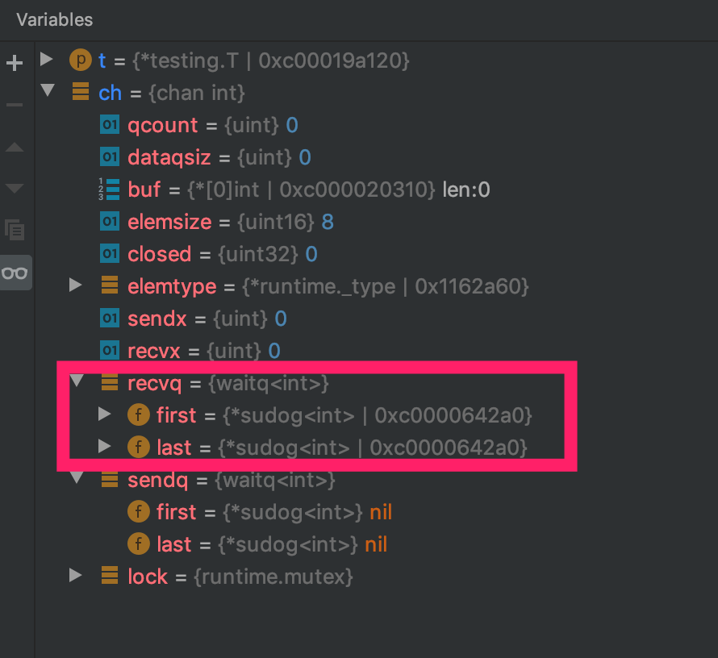
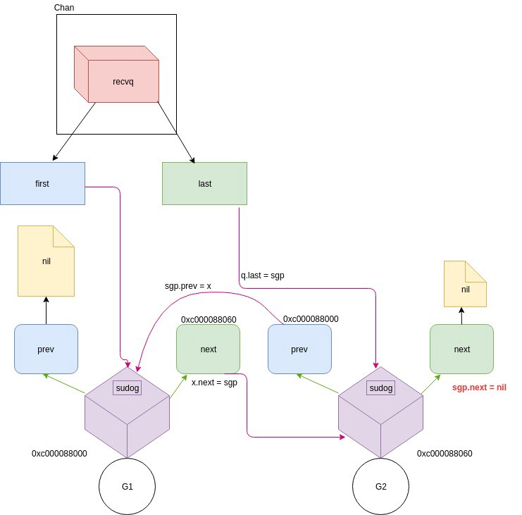

Golang中，在接受和发送数据的同时，channel决定一个Goroutine是执行还是阻塞。关于Golang的调度器，可以看这里。
channel结构
Golang中，channel结构体是用来进行在Goroutine中进行信息传递的结构体。
1 | ch := make(chan int, 8) |
运行是，它是这样的:
hchan 结构体
当使用make(chan int,8)时，channel是从hchan创建的。hchan的代码.
1 | type hchan struct { |
dataqsize是buffer的大小，也就是make(chan T, N)中的N。elemsize是channel中单个元素的大小buf是带缓冲的channel(buffered channel)中用来保存数据的循环队列closed表示channel是否关闭。0->打开，1->关闭sendx和recvx表示循环队列接受和发送数据的下标recvq和sendq是保存阻塞的Goroutine的等待队列，recvq保存读取数据而阻塞的Goroutine,sendq保存写入数据而阻塞的Goroutinelock是在每个读写操作对channel的锁
sudog 结构体
sudog表示Goroutine
1 | type sudog struct { |
看下面的例子
1 | func goRoutineA(a <-chan int) { |
运行程序时，在ch <- 3加个断点，看一下这时channel的内部结构:

可以看到，recvq保存着因为读取数据而阻塞的两个Goroutine
recvq和sendq是一个链表:

channel的发送数据操作
nil channel发送
1
2
3
4
5if c == nil {
...
gopark(nil, nil, waitReasonChanSendNilChan, traceEvGoStop, 2)
throw("unreachable")
}向nil channel发送数据，当前的
Goroutine会暂停操作。closed channel 发送
1
2
3
4if c.closed != 0 {
unlock(&c.lock)
panic(plainError("send on closed channel"))
}如果channel已经关闭，还要发送数据，会引发
panic在channel上阻塞的
Goroutine，会直接向其发送数据1
2
3
4
5
6if sg := c.recvq.dequeue(); sg != nil {
// Found a waiting receiver. We pass the value we want to send
// directly to the receiver, bypassing the channel buffer (if any).
send(c, sg, ep, func() { unlock(&c.lock) }, 3)
return true
}如果在
recvq上有等待接收数据的Goroutine,当前的写操作会直接向其发送数据。1
2
3
4
5
6
7
8
9
10
11
12
13
14func send(c *hchan, sg *sudog, ep unsafe.Pointer, unlockf func(), skip int) {
...
if sg.elem != nil {
sendDirect(c.elemtype, sg, ep)
sg.elem = nil
}
gp := sg.g
unlockf()
gp.param = unsafe.Pointer(sg)
if sg.releasetime != 0 {
sg.releasetime = cputicks()
}
goready(gp, skip+1)
}这里，通过调用
goready(gp, skip+1)，使得阻塞的Goroutine变的可执行(runnable)。带缓冲的channel，如果还有
hchan.buf有空间，将数据放在缓冲区1
2
3
4
5
6
7
8
9
10
11
12
13
14
15
16
17
if c.qcount < c.dataqsiz {
// Space is available in the channel buffer. Enqueue the element to send.
qp := chanbuf(c, c.sendx)
if raceenabled {
raceacquire(qp)
racerelease(qp)
}
typedmemmove(c.elemtype, qp, ep)
c.sendx++
if c.sendx == c.dataqsiz {
c.sendx = 0
}
c.qcount++
unlock(&c.lock)
return true
}chanbuf(c, c.sendx)会操作对应的内存区域当
hchan.buf已经满了1
2
3
4
5
6
7
8
9
10
11
12
13
14
15
16
17
18// Block on the channel. Some receiver will complete our operation for us.
gp := getg()
mysg := acquireSudog()
mysg.releasetime = 0
if t0 != 0 {
mysg.releasetime = -1
}
// No stack splits between assigning elem and enqueuing mysg
// on gp.waiting where copystack can find it.
mysg.elem = ep
mysg.waitlink = nil
mysg.g = gp
mysg.isSelect = false
mysg.c = c
gp.waiting = mysg
gp.param = nil
c.sendq.enqueue(mysg)
gopark(chanparkcommit, unsafe.Pointer(&c.lock), waitReasonChanSend, traceEvGoBlockSend, 2)在当前的栈上创建一个
Goroutine，acquireSudog将当前的goroutine设置成park状态，然后将它放在channel的sendq队列。
发送操作总结
lock锁住整个channel结构体- 确定写操作。尝试从
recvq中取出一个正在等待的goroutine，然后直接将数据写在里面。 - 如果
recvq为空，确定buffer是否有空间。如果有，将数据放在缓冲区。 - 如果缓冲区没有空间，将数据保存在当前执行的goroutine，然后将这个goroutine放在
sendq队列中，然后这个goroutine
的执行暂停。
在第4点中，缓冲区不足的channel，或者没有缓存的channel，数据会保存在sudog结构体的elem
channel的读取数据操作
与channel的发送数据操作类似
1 | func chanrecv(c *hchan, ep unsafe.Pointer, block bool) (selected, received bool) { |
select操作
select的源代码在runtime/select.go
select的使用例子:
1 | func TestSelect(t *testing.T) { |
操作是互斥的，使所以需要获得参与
select的channel的锁，先按hchane的地址排序，然后顺序获得锁，所以并不是同时获得所有参与select的channel的锁。1
sellock(scases, lockorder)
在
scases数组上的每一个scase结构体，包含着当前的操作类型，和正在操作的channel。1
2
3
4
5
6
7type scase struct {
c *hchan // chan
elem unsafe.Pointer // data element
kind uint16
pc uintptr // race pc (for race detector / msan)
releasetime int64
}kind是当前操作类型的case,可以是CaseRecv,CaseSend或者CaseDefault.select的选取顺序是，以伪随机数的方法，将参与select的channel顺序打乱。所以select的顺序和程序声明的顺序是不一样的。1
2
3
4
5
6// generate permuted order
for i := 1; i < ncases; i++ {
j := fastrandn(uint32(i + 1))
pollorder[i] = pollorder[j]
pollorder[j] = uint16(i)
}
1 | for i := 0; i < ncases; i++ { |
只要有不阻塞的channel，
select就会返回，不会等待每一个参与select的channel都才准备好。如果当前没有channle回应，并且没有
default语句，当前的g就会对应的等待队列悬停。1
2
3
4
5
6
7
8
9
10
11
12
13
14
15
16
17
18
19
20
21
22
23
24// pass 2 - enqueue on all chans
gp = getg()
...
nextp = &gp.waiting
for _, casei := range lockorder {
casi = int(casei)
cas = &scases[casi]
if cas.kind == caseNil {
continue
}
c = cas.c
sg := acquireSudog()
sg.g = gp
sg.isSelect = true
...
switch cas.kind {
case caseRecv:
c.recvq.enqueue(sg)
case caseSend:
c.sendq.enqueue(sg)
}
}sg.isSelect表示goroutine在select语句中
我的公众号：lyp分享的地方